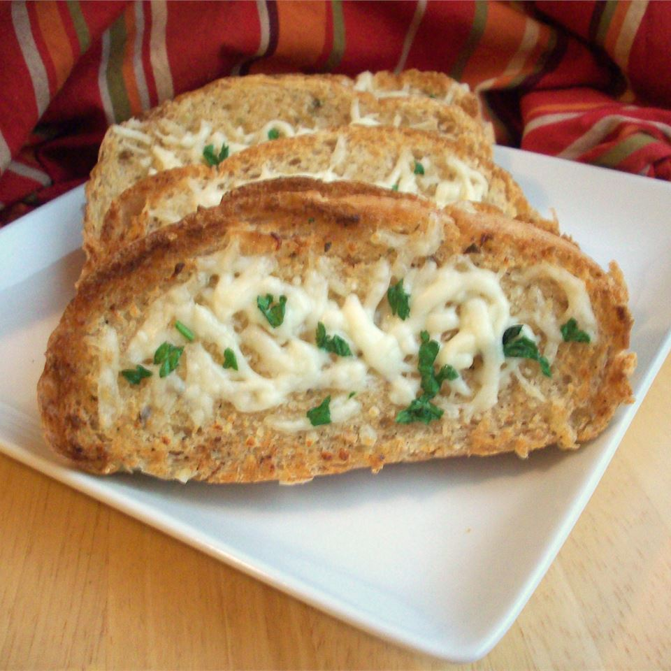

Toasted Garlic Bread Recipe
Enjoy with any great meal or you could even enjoy it by itself.

Ingredients
- 1 (1 pound) loaf italian bread
- 5 tablespoons butter, softened
- 2 teaspoons extra virgin olive oil
- 3 cloves garlic, crushed
- 1 teaspoon dried oregano
- salt and pepper to taste
- 1 cup shredded mozzarella cheese
Steps
- Prehet the broiler.
- Cut the bread into slices 1 to 2 inches thick.
- In a small bowl, mix butter, olive oil, garlic, oregano, salt and pepper.
- Spread the mixture evenly on the bread slices.
- On a medium baking sheet, arrange the slices evenly and broil 5 minutes, or until slightly brown. Check frequently so they do not burn.
- Remove from broiler. Top with cheese and return to broiler for 2 to 3 minutes, until cheese is slightly brown and melted. Serve at once.
Return to main page